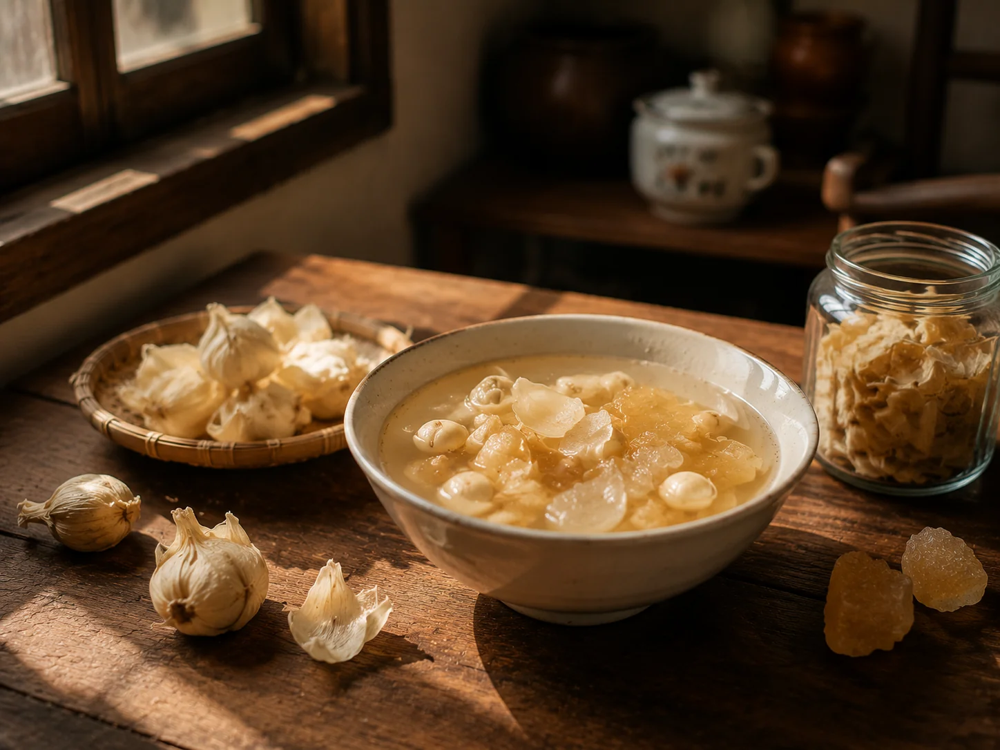

Lily Bulb from the Herb Counter
I went to the herb shop for fritillaria, but the woman behind the counter opened a different drawer and handed me dried lily bulb instead. She said it suited my grandmother better — she was not coughing, she was dry inside.

The woman behind the herb counter
I went to the herb shop for fritillaria for my grandmother. The woman behind the counter slid a glass drawer open, looked in, and closed it. "Fritillaria is out. It arrives the day after tomorrow." I was turning to leave when she pulled open a different drawer and took out a small handful of dried lily bulb. "Boil this in water. It suits your grandmother better than fritillaria — she is not coughing, she is dry inside."
Tremella soup was a sweet pot the whole household drank from, cooked slow on a weekend afternoon. Dried lily bulb was a single cup, made for one person, chosen against a specific complaint. One was a kitchen event; the other was closer to a prescription, written by someone who had read the medicine drawer.
A stranger who knew
She had never met my grandmother, but she read the old prescription in my hand as if she had been writing it for years. "Fritillaria treats the lung. Lily bulb treats the heart. Your grandmother wakes in the middle of the night — better to give her something sweet than another pill." She did not take money. She tipped the lily bulb onto square paper and folded it closed. "If it doesn't help, the loss is mine."
Sour jujube seed tea was the other thing the household used for sleepless nights. Both were calming, but lily bulb was sweet and sour jujube was bitter. Sweet things did not need to be argued for. The cup went to the bedside and was drunk. Bitter things needed the line "it's good for you," which my grandmother had stopped wanting to hear.
The scale at closing time
My grandmother drank the lily bulb soup that evening. She did not say whether it helped. But that night she fell asleep earlier than she had for several days. In the morning she returned the empty bowl to the kitchen without comment, and I washed it and set it upside down on the rack.
Every time I passed the herb shop after that, I looked in. The woman was usually standing behind the counter, weighing out angelica root on a small brass scale. The counter was lined with a sheet of old newspaper, cut to size. The scale weight sat in the upper right corner of the paper, on a patch that was still blank.